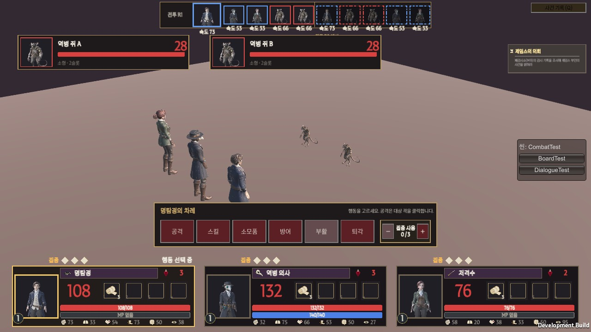
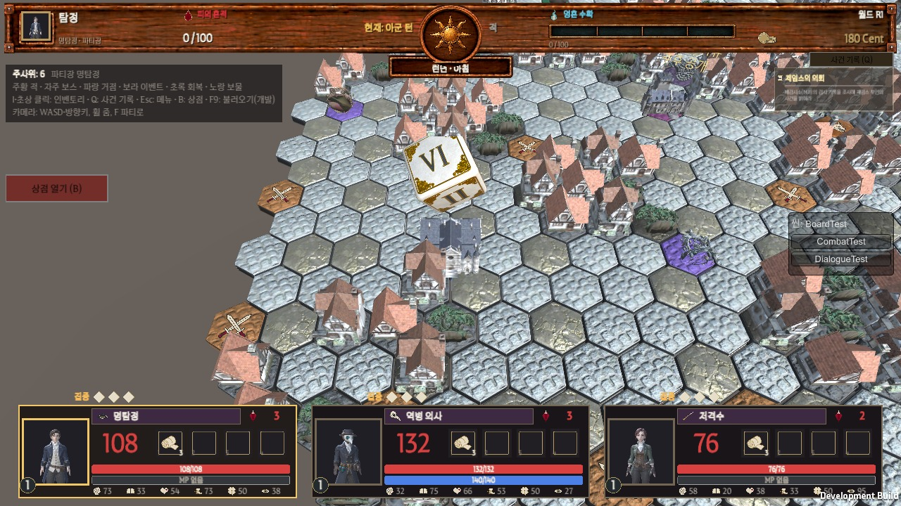

2026-11-07 · 개발·팀장(최동환) → 기획 · 실제 게임(빌드) 화면 + 다른 게임 비교
한 줄 요약: 지금 1막은 처음부터 끝까지 돌아갑니다(자동 플레이로 보스까지 클리어 확인). 다만 다른 게임과 비교하면 아쉬운 곳 8가지가 보입니다. 넣을지, 언제 넣을지 정해 주세요.
기획서에 없는 내용이라 OK를 받은 것만 넣습니다. 항목마다 A/B/C 중 하나를 골라 주세요. (추천 = 개발 의견) 이 문서의 목적: 지금 부족한 점과 있으면 좋을 점을 기획과 같이 확인해서 11/18 마감까지 할 작업량(견적)을 맞추는 것입니다. 기획에서 "필요한지·어떤 방향인지"를 골라 주시면, 개발이 일정에 맞춰 넣을 범위를 정해 확정본을 다시 공유합니다. 일정: 11/8부터는 새 규칙·새 화면 없이 확인·수정만 하기로 했습니다(결정서 14). 그래서 항목마다 "1막에 넣기"와 "1막 뒤"를 나누고, 예상 작업 시간을 적었습니다.
11/7 디자인 결정 요청서와의 관계: 발 밑 그림자 · 앞줄 건물 · 판 위 말 크기 · 공격 반 걸음 · 흐림 효과는 그 요청서에 있습니다. 여기서는 겹치지 않는 것만 다룹니다.
한눈에 보기
#
항목
지금
비교한 게임
예상 작업 (누가)
추천 시기
1
크레딧(만든 사람들)
없음. 받은 사운드는 출처 표기가 필요
거의 모든 게임
개발 0.5일 + 기획 이름 목록
1막에 꼭
2
전투 배경
빈 바닥 한 장
For The King · Darkest Dungeon
개발 1일
1막에
3
판 바깥 배경
회갈색 평면
For The King · 보드게임 디오라마
개발 0.5일
1막에
4
추가 움직임
대기·공격·맞음·쓰러짐 4개뿐
RPG 메이커 기본 세트 등
디자인 (Meshy) + 개발 0.5일
1순위만 1막
5
타격감 (화면 흔들림 등)
피해 숫자만 뜸
옥토패스 · Slay the Spire
개발 0.5일
1막에
6
전투 속도 설정
없음 (움직임이 늘수록 전투가 길어짐)
Wildermyth
개발 0.5일
1막에
7
처음 하는 사람 안내
판 왼쪽 조작 글만 있음. 판정 칸 설명 없음
For The King · Slay the Spire
개발 1일 + 기획 안내 글
1막에
8
1막 뒤 후보 묶음
적 행동 예고 · 전체 지도 등
Slay the Spire · For The King
항목당 개발 2~5일
1막 뒤
1~7번을 모두 1막에 넣을 때 개발 합계
약 4.5일 (+ 디자인 움직임, 기획 글)
1. 크레딧 (만든 사람들) — 꼭 필요
11/7에 받은 사운드 22종은 직접 만든 곡이지만, 악기 소리에 GeneralUser GS를 썼습니다. 함께 온 사용 안내에 "Instrument sounds: GeneralUser GS by S. Christian Collins"를 표기하라고 적혀 있습니다. 지금 게임에는 이 글을 넣을 곳이 없습니다.
다른 게임: 거의 모든 게임이 메인 메뉴나 엔딩 뒤에 크레딧을 둡니다. 쓴 외부 소리·글꼴의 출처도 그곳에 적습니다.
☐ A. 메인 메뉴에 [만든 사람들] 버튼 → 글 목록 창 (팀원 이름·역할 + 출처) ← 추천
☐ B. 1막 클리어 화면 뒤에 흘러가는 크레딧
☐ C. A + B 둘 다 기획에서 줄 것: 팀원 이름·역할 표기 방식 (예: "기획 ○○○"). 글꼴(ZEN SERIF)도 출처를 적을지 확인 부탁.
2. 전투 배경

지금 전투 화면 — 인물 뒤가 빈 바닥과 어두운 하늘뿐
요청 목록(AssetList 4번)에 "전투 배경 — 런던 거리 / 폐검시소 내부"가 P1로 있지만 아직 받지 못했습니다. 지금은 어디서 싸워도 같은 빈 바닥입니다.
For The King: 싸우는 칸의 지형(숲·마을·늪)이 그대로 전투 배경이 됨 → 판과 전투가 이어져 보임. Darkest Dungeon: 던전마다 다른 복도 그림을 뒤에 깔아서 "어디서 싸우는지" 바로 알 수 있음.
☐ A. 받은 3D 소품(집·나무·우물·울타리 등)을 전투장 둘레에 배치 — 일반 전투 = 런던 거리, 보스 = 어둡게. 개발만으로 가능 ← 추천 (1막)
☐ B. 디자인에 전투 배경 따로 요청 (그림 또는 3D) — 받는 날짜에 따라 1막 뒤
☐ C. 지금대로
3. 판 바깥 배경

지금 판 화면 — 왼쪽·아래의 판 밖이 회갈색 평면
요청 목록(AssetList 3번)에 "바닥 밖 배경 → 안개·바다 등"으로 적혀 있지만 아직 정하지 않았습니다.
For The King: 지도 바깥은 바다·안개로 덮여 "탁자 위 모형" 느낌. 보드게임 디오라마 방식: 판 아래에 나무 탁자나 천을 깔아 판이 물건처럼 보이게 함.
☐ A. 템스 강을 떠올리게 하는 어두운 물 + 옅은 안개← 추천
☐ B. 나무 탁자 (보드게임 느낌)
☐ C. 단색 어둠 (가장 간단)
☐ D. 지금대로
4. 추가 움직임 (모션)
받은 움직임은 대기 · 공격 · 맞음 · 쓰러짐 4개입니다. 게임에는 있는데 맞는 움직임이 없는 행동이 6개 있습니다.
다른 턴제 RPG의 기본 세트(RPG 메이커 기본 동작, 3D 턴제용 동작 묶음): 대기 · 공격 · 스킬(주문) · 맞음 · 방어 · 회피 · 아이템 · 승리 · 쓰러짐. 이동하는 게임은 걷기도 넣음.
순위
움직임
게임에서 나오는 때
지금
Meshy 목록에 있는 것
1
걷기
판 위 말 이동 (매 턴)
서서 미끄러짐
Walking (무료)
1
일어서기
쓰러진 동료 부활
누운 채 → 순간 서 있음
Arise (무료), Stand Up
1
스킬(주문)
스킬 · 회복 스킬
회복 스킬은 동작 없음
Spell Cast 12개
2
방어
방어 버튼
동작 없음
Block 18개
2
회피
공격이 빗나감 (MISS)
동작 없음
Stand Dodge
2
승리
전투 승리 창
대기 자세
Victory Cheer
3
마시기 · 달리기 · 위협
회복약 · 퇴각 · 보스 등장
동작 없음
Stand and Drink · Running · Taunt
아군 3명(명탐정·역병 의사·저격수)만 요청. Meshy는 사람형 움직임만 있어 사냥개·거미·가고일은 지금 4개로 둡니다. 무료 표시가 없는 것은 Meshy 유료(Pro) — 디자인 쪽 확인 필요.
☐ A. 1순위 3개(걷기·일어서기·스킬)만 디자인에 요청 → 받는 대로 연결← 추천
☐ B. 1·2순위 6개 요청
☐ C. 1막 뒤로 미룸 고르면 개발이 디자인용 "움직임 2차 요청서"(Meshy 동작 이름 포함)를 만들어 드립니다. 연결 작업은 작습니다(전투 움직임 연결 구조가 이미 있음).
5. 타격감 (화면 흔들림 · 멈칫)
지금은 맞으면 피해 숫자와 맞는 움직임만 나옵니다. 크리티컬(판정 칸 모두 성공)도 숫자 색만 다릅니다.
옥토패스 트래블러: 큰 공격에 화면이 짧게 흔들리고 번쩍임. Slay the Spire: 큰 피해일 때만 화면이 흔들려서, "세게 맞았다"가 숫자를 안 봐도 느껴짐. 공통점: 큰 순간에만 써서 자주 보여도 피곤하지 않게 함.
☐ A. 크리티컬·쓰러뜨림에만 화면 짧게 흔들림 + 0.05초 멈칫← 추천
☐ B. 모든 명중에 약하게
☐ C. 지금대로 어지러운 사람을 위해 설정에 "화면 흔들림 끄기"를 같이 넣을지도 골라 주세요: ☐ 넣음 ☐ 안 넣음
6. 전투 속도 설정
전투 한 판이 판정 칸 연출 → 공격 움직임 → 맞음으로 이어집니다. 4번 움직임이 늘수록 한 판이 길어집니다. 1막은 전투가 많습니다(일반 적 10칸 23마리 + 보스).
Wildermyth: 설정에서 움직임 속도를 최대로 올리면 거의 바로 움직임 — 오래 한 사람들이 많이 씀.
☐ A. 설정 창에 "전투 속도 보통 / 빠르게(1.5배) / 아주 빠르게(2배)"← 추천
☐ B. 전투 중 키(예: Shift)를 누르는 동안만 빠르게
☐ C. 지금대로
7. 처음 하는 사람 안내
판 왼쪽에 조작 글(주사위·칸 색·단축키)은 있습니다. 하지만 이 게임만의 규칙인 판정 칸(슬롯), 피의 흔적 / 피의 사냥, 집중은 게임 안에서 설명하지 않습니다. 처음 하는 사람은 "왜 피해가 덜 들어갔지?"를 모를 수 있습니다.
For The King: 첫 판 전용 짧은 안내 판(튜토리얼)이 있음. Slay the Spire: 처음 보는 것에만 짧은 설명 창이 1번 뜸. 단어에 마우스를 올리면 뜻이 나옴.
☐ A. 처음 1번만 뜨는 짧은 안내 창 4개 — 첫 주사위 · 첫 전투(판정 칸) · 피의 흔적이 처음 오를 때 · 첫 집중 사용 ← 추천
☐ B. 메뉴에 "도움말" 한 장만
☐ C. 지금대로 A·B를 고르면 안내 글은 기획에서 써 주세요(개발이 넣을 칸만 만듦). 글 확정이 11/12이므로 그 안에 같이 주시면 됩니다.
8. 1막 뒤 후보 (지금은 기록만)
규칙이 바뀌거나 작업이 커서 1막 마감 뒤에 보는 것이 맞다고 봅니다. 넣고 싶은 것에만 표시해 주세요.
☐
무엇
다른 게임
우리 게임에서
☐
일반 적 행동 예고
Slay the Spire: 적 머리 위에 다음 행동(공격 몇·방어)이 보임
보스는 예고가 이미 있음. 일반 적까지 넓히면 전략이 깊어짐 (규칙 변경)
☐
전체 지도 보기
For The King: 지도를 넓게 보며 길을 계획
판이 넓어 지금은 카메라를 직접 움직여야 함
☐
HP 낮을 때 대기 자세
RPG 메이커 기본 동작: HP 25% 이하면 지친 자세
위험한 동료가 한눈에 보임 (움직임 추가 필요)
☐
디오라마 흐림 · 안 가 본 곳 흐리게
For The King · 문명 6
11/7 디자인 결정 요청서 5번과 같음
답변 방법
번호 + 글자만 보내 주세요. 예: "1A, 2A, 3A, 4A, 5A(흔들림 끄기 넣음), 6A, 7A, 8: 적 예고"
고른 것을 받으면 개발이 11/18 마감 안에 들어가는 양을 맞춰 "넣는 것 / 1막 뒤로 미루는 것"을 정리한 확정본을 다시 보내겠습니다.
고른 것은 Docs/Planning/Decisions.md에 기록하고 넣겠습니다.
참고 자료
Meshy 동작 목록: docs.meshy.ai/api/animation-library · api.meshy.ai/web/public/animations/resources (680개, 11/7 확인)
RPG 메이커 전투 동작 목록: github-wiki-see.page/m/theoallen/RMMZ/wiki/TBSE-Motion-List
Unity 턴제 전투 동작 연결: orkframework.com/guide/ui/3d-rpg-playground/09-combatant-animations
For The King 전투: fortheking.wiki.gg/wiki/Combat
Wildermyth 움직임 속도 설정: forum.quartertothree.com/t/wildermyth/152485?page=2
Darkest Dungeon II 움직임: tvtropes.org/pmwiki/pmwiki.php/Videogame/DarkestDungeon2
판 위 배치 조사 (출처 17개): Docs/References/3D모델_배치_조사_2026-11-06.md